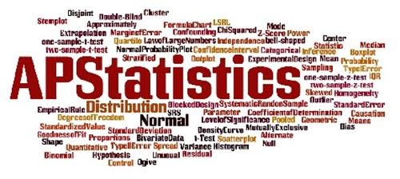

My name is Carlos Casas. I'm in my Jounior year of highschool at Pasaden High School. I have about three year of App Academy experience of coding witth javascript, HTML, CSS, and running some servers. I do organize my plans for the day per day. My favorite class from this school years is AP Statistics. The reasons why AP Stats is my favorite because I just like any type of mathematics except for Geometry. Some of my interests is to create remixes of songs and creating my own music. And like to play insturments as the flute and the guitar.
